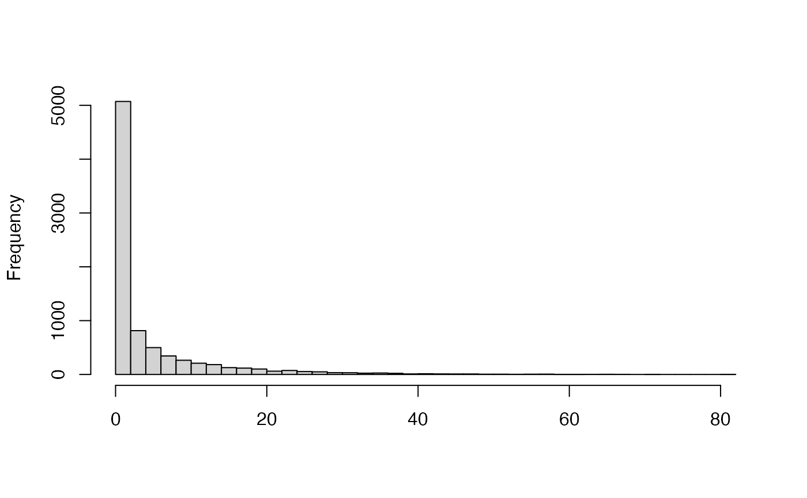

Example of a Simulated Gamma-Poisson Model
Source:R/additional_documentation.R
example_hmm_mcmc_gamma_poisson.RdExample of a Simulated Gamma-Poisson Model
Examples
# Data stored in the object
hist(example_hmm_mcmc_gamma_poisson$data,
breaks = 50, xlab = "", main = "")

# Priors used in simulation
example_hmm_mcmc_gamma_poisson$priors
#> $prior_betas
#> [1] 5 3 1
#>
#> $prior_alpha
#> [1] 1.047478
#>
#> $prior_T
#> [,1] [,2] [,3]
#> [1,] 0.2611659 0.7388341 0.0000000
#> [2,] 0.2607206 0.4662956 0.2729838
#> [3,] 0.0000000 0.2181791 0.7818209
#>
# Model
example_hmm_mcmc_gamma_poisson
#> Model: HMM Gamma-Poisson
#> Type: MCMC
#> Iter: 1500
#> Warmup: 600
#> Thin: 1
#> States: 3
summary(example_hmm_mcmc_gamma_poisson)
#> Estimated betas:
#> beta[1] beta[2] beta[3]
#> 5.5567893 0.6803553 0.1114030
#>
#> Estimated alpha:
#> 1.302679
#>
#> Estimated means:
#> 0.234817 1.915574 11.69664
#>
#> Estimated transition rates:
#> 1 2 3
#> 1 0.98701139 0.01298861 0.00000000
#> 2 0.01237949 0.97545367 0.01216684
#> 3 0.00000000 0.01201136 0.98798864
#>
#> Number of windows assigned to hidden states:
#> 1 2 3
#> 2640 2748 2804
#>
#> Kullback-Leibler divergence between observed and estimated distributions:
#> 0.03099541
#>
#> Log Likelihood:
#> mean sd median
#> -16995.384239 1.407003 -16995.160683
#>
#> P-value of poisson test for difference between rates of states (stepwise):
#> 1-2 2-3
#> 0 0
#>